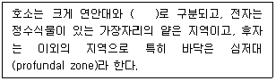
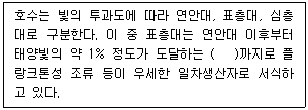
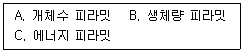
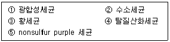
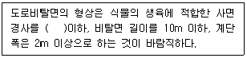
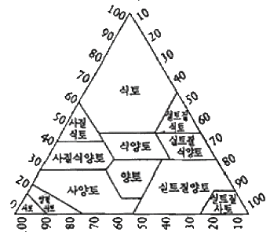
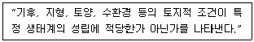

자연생태복원산업기사 (2013-03-10 기출문제)
1과목: 환경생태학개론
1. 천이과정에 있는 두 군집 중 A군집에서는 34종, B군집에서는 22종이 발견되었으며 A와 B 두 군집의 공통된 종은 10종이었다. 이때 두 군집의 유사도지수(Sørensen 계수 : CCs)는? (단, 소수점 이하 3자리에서 반올림한다.)
- 0.18
- 0.56
- 0.36
- 0.83
(정답률: 알수없음)

2. 두 생물종 사이에 주로 일어나는 상호작용이 아닌 것은?
- 상리공생
- 경쟁
- 원시협동
- 교란
(정답률: 알수없음)
3. 생물의 밀도 측정법이 아닌 것은?
- 전수조사
- 방형구법
- 비구획법
- 방사선동위원소이용법
(정답률: 알수없음)
4. 다음 중 채식먹이연쇄(detritus food chain)란?
- 녹색식물에서 시작하여 초식자-육식자로 이어지는 먹이연쇄
- 생물의 유체에서 시작하여 미생물-잔재식자-포식자로 이어지는 먹이연쇄
- 육식자로부터 시작하여 초식자-잔재식자로 이어지는 먹이연쇄
- 미생물로부터 시작하여 초식자-잔재식자-육식자로 이어지는 먹이연쇄
(정답률: 알수없음)
5. 세계기후협약(기후변화방지협약)은 어떤 물질의 배출을 억제하기 위한 것인가?
- 염화불화탄소
- 프레온가스
- 이산화탄소
- 할론가스
(정답률: 알수없음)
6. 다음 중 ( )에 적합한 것은?

- 변수대
- 표수대
- 담수대
- 조광대
(정답률: 알수없음)
7. 식물의 군집이 어떤 환경에서 방향성을 가지고 순차적으로 변화하는 것을 무엇이라 하는가?
- 생물 번식 잠재력
- 생태적 천이
- 개체군 분산
- 개체군 변이
(정답률: 알수없음)
8. 다음 보기의 설명 중 ( )에 알맞은 용어는?

- 광 보상 깊이(light compensation depth)
- 광 생산 깊이(light production depth)
- 광 생명 깊이(light life depth)
- 광 활동 깊이(light activity depth)
(정답률: 알수없음)
9. 육상생태계가 적도를 중심으로 북반구 쪽으로 형성되는 순서가 맞는 것은?
- 열대우림→초원→사막→온대낙엽수림→타이가→툰드라
- 열대우림→사막→초원→온대낙엽수림→타이가→툰드라
- 사막→열대우림→초원→온대낙엽수림→툰드라→타이가
- 사막→열대우림→온대낙엽수림→초원→툰드라→타이가
(정답률: 알수없음)
10. 다음 생태적 피라밋 유형 중 영양단계가 높아질수록 수나 양이 줄어드는 유형을 모두 고른 것은?

- A
- A, B
- B, C
- A, B, C
(정답률: 알수없음)
11. UN Convention on Biological Diversity는 무엇의 약자인가?
- 생물다양성 협약
- 세계 생태계회의
- 국제농산물협의회
- 지속가능한 개발
(정답률: 알수없음)
12. 다음 중 생태계를 구성하는 생물적 요인 중 무기영양독립생물(chemolithotroph, chemoautotroph)을 모두 옳게 고른 것은?

- ①, ③, ⑤
- ②, ③, ④
- ②, ④, ⑤
- ③, ④, ⑤
(정답률: 알수없음)
13. 요소 비료를 사용하면 지구온난화 가스인 산화질소가 만들어 지는데 그 과정을 바르게 설명한 것은?
- 요소분해→질화과정→암모니아 생성→탈질과정
- 요소분해→암모니아 생성→질화과정→탈질과정
- 요소분해→탈질과정→질화과정→암모니아 생성
- 요소분해→암모니아 생성→탈질과정→질화과정
(정답률: 알수없음)
14. 여러 다른 종들 사이에 일어날 수 있는 생물체간의 상호작용 중 특정한 두 종이 반드시 서로를 필요로 하는 경우의 상호관계는?
- 증립
- 상리공생
- 경쟁
- 편리공생
(정답률: 알수없음)
15. 생태계에서의 식물작용에 관한 설명 중 옳지 않은 것은?
- 에틸렌가스는 식물의 노화를 촉진한다.
- 식물도 빛, 수분, 양분에 대해 경쟁을 한다.
- 알레로파시 물질은 식물의 낙엽에서도 방출된다.
- 식물의 성장을 촉진하는 호르몬인 옥신은 식물의 열매를 성숙하게 하는 특징이 있다.
(정답률: 알수없음)
16. 생태계에서 생산자인 녹색식물의 역할에 대하여 옳게 설명한 것은?
- 유기물을 무기물로 분해시킨다.
- 화학결합에너지를 빛에너지로 전환시킨다.
- 태양에너지를 이용하여 유기물을 합성시킨다.
- 호흡활동에 의해 열에너지를 방출시킨다.
(정답률: 알수없음)
17. 우점종(dominant species)에 대한 설명으로 옳지 않은 것은?
- 온대지방으로 갈수록 열대지방에 비해 우점종수가 많다.
- 물질순환의 주요 역할을 하는 종을 생태적 우점종이라 한다.
- 우점종은 군집 내 최대의 생산력을 갖는다.
- 육상군집에서 종자식물이 독립영향을 생물 내 주요 우점종이다.
(정답률: 알수없음)
18. 군집의 한 개체군내에서의 상호작용은 개체밀도에 종속적인 경향을 보여준다. 두 개체군간에서 한 개체군은 이익 또는 영향을 받지 않지만 다른 개체군은 불익을 받게 되는 상호작용이 아닌 것은?
- 포식(predation)
- 편해(amensalism)
- 기생(parasitism)
- 중립(neutralism)
(정답률: 알수없음)
19. 담수생태계에 관한 설명 중 옳지 않은 것은?
- 강, 하천이 바다와 만나는 지점을 하구라고 하며, 많은 생물들이 서식한다.
- 강의 하류로 갈수록 서식하는 물고기들은 상류보다 산소 요구량이 많은 종들이 서식한다.
- 연못(pond)의 경우 수생식물의 빠른 생장으로 인해 개방수면이 메워질 수 있다.
- 호수(lake)는 연못(pond)보다 더 크며, 구조에 따라 다양하고 복잡한 생물군집을 형성한다.
(정답률: 알수없음)
20. 다음 중 “오염물질의 농도가 상위단계로 바뀔 때마다 높아지는 것”이 설명하는 것은?
- 먹이연쇄
- 생물농축
- 먹이그물
- 물질순환
(정답률: 알수없음)
2과목: 환경학개론
21. 다음 도로비탈면과 관련된 설명 중 ( )에 적합한 것은?

- 15도
- 30도
- 45도
- 60도
(정답률: 알수없음)
22. 자연환경보전법 시행규칙상 생태통로의 설치기준으로 틀린 것은?
- 생태통로의 길이가 길수록 폭은 좁게 설치한다.
- 생태통로 내부에는 다양한 수직적 구조를 가진 아교목·관목·초목 등으로 조성한다.
- 배수구 일부 지점에 경사가 완만한 탈출구를 설치하여 작은 동물의 이동이 용이하도록 하고, 미끄럽지 아니한 재질을 사용한다.
- 생태통로 입구는 지형·지물이나 경관과 조화되게 설치하여 동물의 이동에 지장이 없도록 상부에 식생을 조성한다.
(정답률: 알수없음)
23. BOD(생물학적 산소 요구량)의 개념으로 적합하지 않은 것은?
- 유기물질이 유입할 때의 DO 소비량의 잠재적 평가
- 실험실에서는 20℃에서 5일간 시료를 배양시켰을 때에 소모된 산소량을 측정
- 오·폐수에 용존산소의 총량
- 수중 유기물이 호기성 미생물에 의해 소모되는 산소의 양
(정답률: 알수없음)
24. 국토의 계획 및 이용에 관한 법률상 국토는 토지의 이용 실태 및 특성, 장래의 토지 이용방향 등을 고려하여 용도 지역을 구분할 수 있다. 그 구분에 해당되지 않는 것은?
- 도시지역
- 관리지역
- 준농림지역
- 자연환경보전지역
(정답률: 알수없음)
25. 에코폴리스(Ecopolis)에 대한 개념과 다른 것은?
- 대상지역은 도시이다.
- 주된 수단은 첨단적이며 친환경적 기술이다.
- 주된 과제는 오염, 에너지, 물, 도시생태 등 인간과 도시환경문제이다.
- 선진국에서와 같은 실패경험을 방지하므로 경비가 매우 저렴하다.
(정답률: 알수없음)
26. 전작지로 이용할 수 있고, 과수원으로 이용이 적합한 경우 토양분류 등급은?
- 1등급
- 2등급
- 3등급
- 4등급
(정답률: 알수없음)
27. 생물지리지역적 접근(bioregional approach) 중 공간구분의 가장 하위단위에 해당하는 것은?
- 경관지구(Landscope District)
- 장소단위(Place Unit)
- 하부생물지역(Subregion)
- 생물지역(Bioregion)
(정답률: 알수없음)
28. 벽면을 생물서식공간으로 조성하기 위한 식물재료의 선정기준으로 가장 거리가 먼 것은?
- 녹화목적의 부합성
- 관리성
- 경관성
- 기능성
(정답률: 알수없음)
29. 주요 육상 생태계 중 평균 1차 순생산(Net Primary Productivity)이 가장 높은 지역은?
- 열대우림
- 툰드라
- 온대 초지
- 사바나
(정답률: 알수없음)
30. 습지보전법 시행령상 명예습지생태안내인의 위촉기간 기준은?
- 1년
- 2년
- 3년
- 5년
(정답률: 알수없음)
31. 지속가능한 개발의 원칙에 맞지 않는 것은?
- 자급경제의 원칙
- 시민참여 및 사회형평의 원칙
- 미래세대에 대한 배려의 원칙
- 환경 수용능력 확대의 원칙
(정답률: 알수없음)
32. 다음 중 생태 네트워크의 특징이 아닌 것은?
- 생물의 서식공간을 기본단위로 한다.
- 환경복원·창조의 시점은 필요에 따라 토지 확보가 필요하다.
- 생물다양성의 시점은 학술적으로 희귀한 동식물보호도 포함된다.
- 주위에 흔히 분포하는 야생생물은 보호대상이 아니다.
(정답률: 알수없음)
33. 다음 중 이산화탄소와 같은 온실가스 배출 규제를 위한 국제협약은?
- 기후변화협약
- 의제21(Agenda 21)
- 지구헌장
- 생물다양성협약
(정답률: 알수없음)
34. 생물에게 이상 현상을 나타내는 폴리카보네이트, PCBs, 다이옥신, 디디티(DDT)와 같은 물질을 무엇이라 하는가?
- 열섬화 현상 촉진물질
- 내분비 교란물질
- 산성 침적물질
- 온실화 야기물질
(정답률: 알수없음)
35. 다음 중 환경용량에 대한 설명으로 가장 적합한 것은?
- 일정 서식처가 부양할 수 있는 생물체의 수와 생태량의 최대 밀도
- 척추동물이나 고등무척추동물에서의 각 개체, 암·수 1쌍 또는 가족집단의 활동범위
- 어떤 생물이 어떤 형태로든 점유지역을 안 또는 밖으로 이동하는 것
- 두 개체군 사이의 생태적 지위가 중복될 수 없음
(정답률: 알수없음)
36. 다음 중 사전환경성 검토제도의 기능에 해당되지 않는 것은?
- 환경영향평가의 협의기간 단축 및 효율성을 제고한다.
- 지속 가능한 개발 이념을 실현한다.
- 확정된 개발사업의 환경적 영향을 고려한다.
- 사전 입지의 타당성 검토로 대안을 제시한다.
(정답률: 알수없음)
37. 치수를 위해 원형을 훼손시킨 하천을 자연형으로 복원하고 동시에 친구공간화 하기 위한 계획목표와 방법이 적절하게 연결되지 않은 것은?
- 생태계의 다양성 창출 – 다양한 식생대 창출
- 다이나믹한 하천의 속성 구현 – 자연하천의 사행 특성활용
- 호감가는 경관연출과 적절한 이용체계 – 하안으로의 접근성을 최대화 하기 위한 시설도입
- 물과 녹음의 네트워크 형성 – 수계와 수림의 연계
(정답률: 알수없음)
38. 생태계는 각 유기체들 간의 복잡한 관계망과 한 부분의 변화로 동일 생태계의 다른 부분들과 인접한 생태계에 반향을 불러일으키는 다양한 피드백의 연결고리가 특징이다. 오랜 시일에 걸쳐 진화해 온 생태계가 외부 환경으로부터 부분적인 교란이 있어도 제 모습을 찾아가는 것을 가리켜 무엇이라고 하는가?
- 생태계의 동적균형
- 생태계의 다양성
- 생태계의 자립성
- 생태계의 순환성
(정답률: 알수없음)
39. 다음 중 생태공원의 개념 설명으로 옳지 않은 것은?
- 유지 및 관리를 최대화할 수 있는 공원
- 인간과 자연의 공존, 공진화가 가능한 공원
- 도시생물다양성 보전 및 증진에 기여하는 공원
- 다양한 생물종이 서식하는 공원
(정답률: 알수없음)
40. 다음 중 도시환경계획에 있어서 녹지의 기능이 아닌 것은?
- 도시기상의 조절
- 아름다운 도시경관
- 여가활동 공간감소
- 흡진 및 방진효과
(정답률: 알수없음)
3과목: 생태복원공학
41. 옥상녹화에 대한 설명으로 옳은 것은?
- 작은 새나 곤충 등과 공생을 위한 옥상의 비오톱의 조성은 현재 별로 실효성이 없고, 방수나 건물의 하중 등 문제점만 야기하고 있다.
- 옥상에 조성되는 녹화는 평소에 물을 계속 머금고 있는 토양이므로 우천시 홍수의 간접적인 원인을 제공하고 있다.
- 옥상녹화는 소리파장을 흡수 분쇄하므로 소음을 경감하는 효과가 있다.
- 옥상녹하는 건물 위 수목의 뿌리가 옥상의 방수층을 파괴하므로 건물의 수명을 단축시킨다.
(정답률: 알수없음)
42. 습지를 위한 생태복원의 단계별 검토 내용을 순서대로 옳게 나열한 것은?
- 대상 지역의 여건분석 → 부지현황조사 및 평가 → 복원목적의 설정 → 복원계획의 작성 → 모니터링 실시
- 대상지역의 여건분석 → 모니터링 실시 → 부지현황조사 및 평가 → 복원계획의 작성 → 복원목적의 설정
- 복원목적의 설정 → 부지현황조사 및 평가 → 모니터링 실시 → 복원계획의 작성 → 대상 지역의 여건분석
- 부지현황조사 및 평가 → 대상 지역의 여건분석 → 복원계획의 작성 → 복원목적의 설정 → 모니터링 실시
(정답률: 알수없음)
43. 생태네크워크를 구성하는 생태적 회랑(corridor)의 부정적 효과가 아닌 것은?
- 포식 기회의 증대
- 생물다양성의 증진
- 본래에는 일어나지 않을 유전적 교류의 조장
- 회랑을 이동하는 동물의 접촉감염 등에 의한 질병전염
(정답률: 알수없음)
44. 다음 토성구분 3각도에서 모래함량 30%, 점토함량 40%, 실트함량 30%에 해당하는 토성은?

- 식토
- 식양토
- 사질식양토
- 실트질양토
(정답률: 알수없음)
45. 담수생태계 복원시 야생습지 조성에서 임연부 초기의 천이단계에서 출현하는 식물로들만 옳게 짝지어진 것은?
- 인동, 싸리류, 붉나무
- 닭의장풀, 실망초, 쇠뜨기
- 쇠뜨기, 달맞이꽃, 꼬리조팝나무
- 새삼, 싸리류, 꼬리조팝나무
(정답률: 알수없음)
46. 도로비탈면에서 식물뿌리의 생장을 저해하지 않도록 하기 위한 토양표면경도에 대한 설계 표준은?
- 20mm 이하
- 23mm 이하
- 26mm 이하
- 30mm 이하
(정답률: 알수없음)
47. 훼손지 비탈면의 경우 양분을 포함하지 않은 하층토인 경우가 많아 녹화시 일정량의 비료를 시비해야 할 필요가 있다. 다음 중 각 비료성분과 그 효과가 바르게 연결된 것은?
- P : 식물섬유의 주성분으로 줄기와 잎의 생육에 큰 효과가 있다.
- N : 질소가 부족하면 뿌리의 발육이 나빠지며, 생장이 저하된다.
- K : 탄수화물의 합성과 동화생산물의 이동에 관여하여 동화작용을 촉진하고, 일조의 부족을 보충하는 생리작용도 한다.
- Ca : 칼슘이 부족하면 지엽의 생육이 빈약해지고, 잎이 담황색을 나타낸다.
(정답률: 알수없음)
48. 다음에서 에코톱(ecotope)에 설명으로 옳은 것은?
- 지도에 표시될 수 있는 불균질한 성질을 지닌 최대단위이다.
- 단독으로 특이한 생태계를 구성하고 있는 장소를 의미한다.
- 서로 같은 생태단위들이 만나 종다양성이 높은 장소를 의미한다.
- 인간들의 토지이용에 의해 에코톱은 커다란 영향을 받아오고 있다.
(정답률: 알수없음)
49. 폐광지의 복원 및 녹화공법에 대한 설명으로 잘못된 것은?
- 조기녹화에는 외래초류가 효과적이고, 생태적 안정을 위해서는 재래초류가 유리하다.
- 우리나라 석탄채굴은 갱굴채굴장 보다는 노천채굴장이 많아 그 주변의 복원 및 녹화가 주를 이룬다.
- 폐광지의 복구공사 실패의 주요 원인으로는 돌공작물 파손율이 높은데 있다.
- 폐광지의 녹화공사 수종으로는 아까시나무, 리기다소나무, 산오리나무, 물오리나무 등이 사용된다.
(정답률: 알수없음)
50. 다음 중 매립지 복원공법에 대한 설명으로 틀린 것은?
- 성토법은 임해매립지의 식재기반 조성에 많이 사용되는 방법으로서 외부에서 반입한 산흙을 수목생육 적정 깊이에 따라 성토를 해주는 방법임
- 치환객토법은 상층과 하층이 만나는 부분에 배수용 모래층을 설치하고, 하층인 세립미사질 토층에 맹암거를 만들어 배수를 원활하게 해주고 염분상승을 최소화하는 방법임
- 사구법은 하층부인 세립미사질 토층에 파일을 박아 하단부 투수층까지 연결한 후 파일 파이프 안에 모래, 사질양토, 자갈 등을 넣어 배수를 원활히 하는 방법임
- 사주법은 적정한 수량의 사주를 설치했을 때 염분제거 및 배수에 효과가 크나 소요경비가 많이 듬
(정답률: 알수없음)
51. 배수로를 통과하는 유량이 20m3/sec이고, 배수로를 흐르는 물의 평균유속이 5m/sec 일 때 배수로 구조물의 단면적(m2)은 얼마인가?
- 25
- 4
- 2.5
- 0.4
(정답률: 알수없음)
52. 생울타리를 조성하기 위해 도입되는 식물의 구비조건으로 적합하지 않은 것은?
- 잎과 가지가 외관상 아름다워야 한다.
- 낙엽수가 적합하다.
- 수분가 토양조건이 열악한 곳에서도 잘 자라야 한다.
- 재생력이 강해 진정하여도 가지에서 눈이 잘 나는 것이어야 한다.
(정답률: 알수없음)
53. 다음 중 내염성이 약한 수종은?
- 해송
- 팽나무
- 자작나무
- 섬잣나무
(정답률: 알수없음)
54. 다음 중 구곡침식의 설명으로 옳은 것은?
- 비탈면에 하나의 분명한 작은 물줄기가 형성된 것을 말한다.
- 표면유거수가 불안정한 상태의 토양을 운반하면서 나타나는 침식현상을 말한다.
- 지표면 아래 땅 속에서 침투수가 땅 속을 통과할 경우 그 통로에 있는 흙을 운반하는 현상으로 파이핑현상이라고도 한다.
- 누구침식이 점점 더 진행·악화되어 그 규모가 커져서 보다 깊고 넓은 침식골을 형성하는 왕성한 침식형태이다.
(정답률: 알수없음)
55. 자연형 하천의 저수로 호안공법으로 적합하지 않은 것은?
- 버드나무 가지법
- 식생과 돌을 이용한 방법
- 식생이용법
- 콘크리트블럭 시공법
(정답률: 알수없음)
56. 식재지반 불량지역에 식재층을 조성할 때 시공의 순서로 바르게 나열된 것은?
- 배수층 조성 → 경제적인 성장을 위한 배수 체계 → 환경 친화적 개량 → 식재층 조성
- 경제적인 성장을 위한 배수 체계 → 배수층 조성 → 환경 친화적 개량 → 식재층 조성
- 환경 친화적 개량 → 배수층 조성 → 경제적인 성장을 위한 배수 체계 → 식재층 조성
- 배수층 조성 → 환경 친화적 개량 → 경제적인 성장을 위한 배수 체계 → 식재층 조성
(정답률: 알수없음)
57. 다음 중 생태적 복원에서 식재층을 조성할 때 경사도에 대한 설명이 옳지 않은 것은?
- 0~3% : 표면배수가 양호, 정지작업의 필요성이 많음, 마운딩 처리를 하면 보기 좋은 경관을 연출
- 3~8% : 흥미로운 시각적 경험을 제공, 정지 작업량 증가, 식재지로서 가장 적당
- 8~15% : 강한 시각적 요소 제공, 많은 정지 작업비, 토양층이 얇은 것이 특징
- 15~25% : 일반적인 식재 기술로는 식재가 불가능
(정답률: 알수없음)
58. 인위적인 나지 또는 어떤 원인에 의해 훼손된 장소에 처음으로 침입하여 번성한 식물은?
- 선구식물
- 지표식물
- 극상수종
- 정수식물
(정답률: 알수없음)
59. 다음 보기에서 설명하는 환경 포텐셜의 유형은?

- 종의 공급 포텐셜
- 입지 포텐셜
- 종간관계 포텐셜
- 천이 포텐셜
(정답률: 알수없음)
60. 다음 수생식물의 분류에 대한 설명 중 옳은 것은?
- 정수식물은 뿌리를 토양에 내리고 줄기를 물 위로 내놓아 대기 중에 잎을 펼치는 수생식물로 말즘, 갈대 등이 있다.
- 부엽식물은 뿌리를 토양에 내리고 잎을 수면에 띄우는 수생식물로 수련, 어리연꽃 등이 있다.
- 침수식물은 물 위에 자유롭게 떠서 사는 수생식물로 말즘, 검정말 등이 있다.
- 부수식물은 뿌리를 토양에 내리고 물 속에서 생육하는 수생식물로 개구리밥, 생이가래 등이 있다.
(정답률: 알수없음)
4과목: 생태조사방법론
61. 수목에서 기저면적으로 대신할 수 있는 정량적 특성은?
- 밀도
- 빈도
- 수도
- 피도
(정답률: 알수없음)
62. Braun-Blanquet의 피도계급에서 1은 무엇을 의미하는가?
- 그 종의 피도가 조사면적의 50% 이상을 차지
- 그 종의 피도가 조사면적의 10~50%를 차지
- 그 종의 피도가 조사면적의 1~5%를 차지
- 그 종의 피도가 조사면적의 1% 미만을 차지
(정답률: 알수없음)
63. 조류(bird)의 조사방법으로 타당성이 적은 것은?
- 산지에서 일정 속도로 보행하면서 기록
- 논에서 개시점과 종료점에서 일정시간씩 기록
- 울음소리로 확증된 종 및 개체수는 조사결과 제외
- 철새는 철새가 가장 많이 도래하는 시기에 조사
(정답률: 알수없음)
64. 생태계환경 요인 중 지리·지형·경관적 특성을 알아보기 위해서는 해발고도, 경사의 방위와 각도, 지형과 토양, 경관특성을 조사한다. 다음 설명 중 틀린 것은?
- 조사 장소의 경사에 대한 방향과 각도는 그곳 군락의 일조조건이나 풍향, 토양의 습도 등과 관계한다.
- 고도계를 이용하여 해발고도를 측정하기 위해서는 삼각점이나 해안 등을 통과할 때 고도계를 보정한다.
- 토양의 채취는 일반적으로 1m 이상을 파서 채취하는 것이 일반적이나, 식생조사의 경우 낙엽층을 제거한 층의 토성을 파악한다.
- 경사계의 좌측에는 E, 우측에는 W로 동서가 일반적인 상식과 반대로 표기되었다.
(정답률: 알수없음)
65. 초본식물의 생산성 측정을 위한 가장 보편적이고 간단한 방법은?
- 수확법
- 상대생장법
- 영구방형구법
- 동화챔버법
(정답률: 알수없음)
66. 다음 중 서식 정보 조사 시에 이용되는 방법이 아닌 것은?
- 포획 조사
- 적집 관찰
- 청문 조사
- 통계 조사
(정답률: 알수없음)
67. 플랑크톤 군집 조사에서 기구와 시약이 사용되는 순서에 따라 옳게 나열된 것은?
- 반돈(Van Dorn) 채수기 → 농축용 1000mL 메스실린더 → 루골(Lugol) 용액 → 플랑크톤 계실
- 반돈(Van Dorn) 채수기 → 농축용 1000mL 메스실린더 → 플랑크톤 계실 → 루골(Lugol) 용액
- 반돈(Van Dorn) 채수기 → 루골(Lugol) 용액 → 농축용 1000mL 메스실린더 → 플랑크톤 계실
- 반돈(Van Dorn) 채수기 → 플랑크톤 계실 → 농축용 1000mL 메스실린더 → 루골(Lugol) 용액
(정답률: 알수없음)
68. 다음 중 무기물을 유기화합물로 합성하여 비생물적 환경과 생물적 환경을 연결하는 역할을 하는 것은?
- 1차 생산자
- 1차 소비자
- 2차 소비자
- 분해자
(정답률: 알수없음)
69. 모든 군집의 종조성이 동일할 때 군집유사도 지수 CJ 또는 CS 값은?
- 0
- 1
- 2
- 100
(정답률: 알수없음)
70. 호두나무의 잎이나 뿌리에서 수용성 Phenol이 배출되어 다른 식물의 발아나 성장을 저해하는 현상은?
- 타감작용
- 기지현상
- 연작장해
- 종내협동
(정답률: 알수없음)
71. 피식자가 피식되는 위험을 최소화하기 위한 방법이 아닌 것은?
- 방위(防衛)
- 집단행동
- 회피반응
- 공격형 의태
(정답률: 알수없음)
72. 무작위 표본추출에 대한 설명으로 맞지 않은 것은?
- 모집단 내의 각 원소가 표집 될 기회가 균등하다.
- 무작위로 추출한 표본은 무작위 표본이다.
- 난수표를 이용한다.
- 난수표를 이용한 표본은 무작위 표본이 아니다.
(정답률: 알수없음)
73. 다음 중 생지화학적 순환에 대한 설명으로 맞지 않은 것은?
- 기체형은 저장고가 대기권 또는 수권으로 순환과정에 기체 형태가 관여하므로 순환속도가 빠르다.
- 퇴적형은 저장고가 지각이므로 순환속도가 매우 느리다.
- 지구 온난화에 관여하는 CO2와 CH4를 통해 탄소의 생지화학적 순환을 파악할 수 있다.
- 생물에게 소량만이 필요한 인, 철, 나트륨, 칼슘 등은 기체형 순환을 한다.
(정답률: 70%)
74. 다음 중 식물의 낙엽 분해율 측정과 관련된 설명으로 옳지 않은 것은?
- 분해에 관여하는 미세 종속 영양생물은 주로 박테리아. 균류, 선충류, 원생생물, 윤충류 등이다.
- 리터백의 크기는 조사하려는 낙엽을 충당할 수 있을 정도여야 한다.
- 리터백의 그물 크기는 0.1mm로 정해져 있는 표준품을 사용하여야 한다.
- 조사구역 내에 배치된 리터백의 수는 예상하는 분해율과 지역의 미세기후에 따라 다르게 한다.
(정답률: 알수없음)
75. 생태계의 생물량 또는 생산량 측정방법으로 옳은 것은?
- 초본식물의 경우 상대생장법이 많이 이용된다.
- 생물량은 생중량(fresh weight)을 기준으로 한다.
- 육상목본 식물의 경우 수확법이 일반적으로 사용된다.
- 수중식물 플랑크톤의 경우 명병-암병법을 사용하여 측정한다.
(정답률: 알수없음)
76. 표본추출방법의 설명 중 틀린 것은?
- 랜덤 표본추출은 먼저 추출하려는 생태적 실체의 범위를 확정한 다음 표본 추출의 방법을 선정하고, 마지막으로 표본추출에 착수한다.
- 반복 표본추출은 측정값의 불명확성을 반복측정을 통해 극복하려는 방법이다.
- 성취도 곡선으로 반복 표본수가 적절한지를 살핀다.
- 하위표본추출은 표본추출과 다른 방법으로 선별하는 것이 좋다.
(정답률: 알수없음)
77. 야생동물을 대상으로 하는 군집조사에서 일반적인 조사항목에 포함되지 않는 것은?
- 개체들이 덮고 있는 면적
- 서식밀도
- 조사지에서의 총 서식 개체수
- 서식 범위
(정답률: 알수없음)
78. 다음 중 빈도(frequency)에 대한 설명으로 맞지 않는 것은?
- 상대빈도는 출현한 모든 종의 빈도의 합이다.
- 전체 방형구 수에 대한 어떤 종이 출현한 표본수의 백분율이다.
- 10개의 표본 중 문제 종이 7개에서 출현하였으면 70%가 된다.
- 개체가 모여 있는지 흩어져 있는지 분포 유형 검정에 이용할 수 있다.
(정답률: 알수없음)
79. 저셔성 대형무척추동물의 표본을 현지에서 고정할 경우에 이용되는 kaie's fluid의 구성비는?
- DW 60%, Ethyl alcohol 30%, formalin 5%, acetic acid 5%
- DW 50%, Ethyl alcohol 25%, formalin 15%, acetic acid 10%
- DW 59%, Ethyl alcohol 28%, formalin 11%, acetic acid 2%
- DW 55%, Ethyl alcohol 32%, formalin 10%, acetic acid 3%
(정답률: 알수없음)
80. 수환경 분석요인으로 측정하는 투명도(transparence)에 대한 설명으로 옳지 않은 것은?
- 점토, 침니, 미세한 유기 및 무기물질, 플랑킅노 및 기타 미생물들 같은 부유물질에 따라 달라진다.
- 물속에 있는 투명도판이 보이게 되는 깊이로 나타낸다.
- 투명도판은 지름 50cm, 두께 1cm에 지름 5cm의 구멍이 10개 뚫려 있는 백색원판을 사용하여야 한다.
- 일기, 시각, 개인차 등에 따라 달라지므로 측정조건을 기록해 두어야 한다.
(정답률: 알수없음)
CCs = 2 × 공통된 종의 수 / (A군집의 종의 수 + B군집의 종의 수)
= 2 × 10 / (34 + 22)
= 0.36 (소수점 이하 3자리에서 반올림)
따라서 정답은 "0.36"이다.